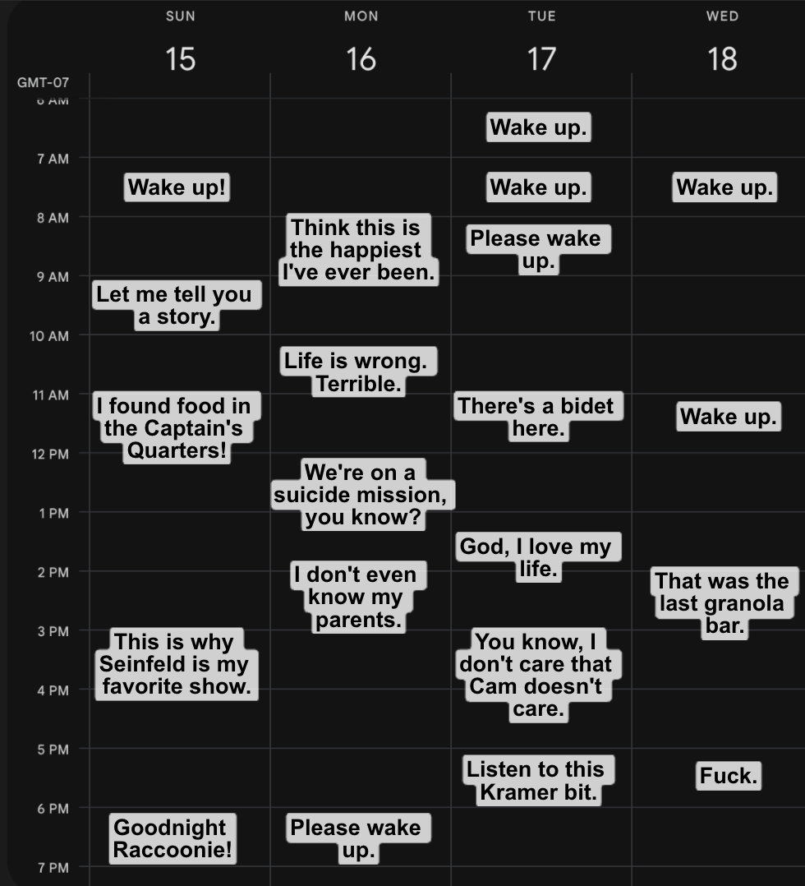
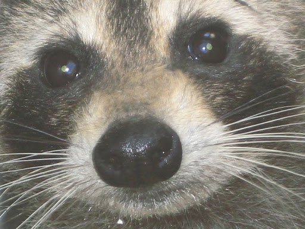

Cosmo: And so Kramer sees her from across the window and says “I’m out!”!!
Cosmo: Hilarious bit.
Cosmo: Can you wake up now?
Cosmo: Your hands are cold like death and your fur is matted. Baby, I’d say you fit better on the side of the road than the world’s most advanced space ship.
Cosmo: I’m joking.

Foreign movement detected.
Cosmo: Huh! What! Zeta, where is it coming from?
Movement detected in Captain’s Quarters.
Raccoon: *Chitter*
Cosmo: Oh! My! God! It’s happening, it’s happening! I don’t look nearly as good as I did a few days ago.
Raccoon: Whuh…
Raccoon: Meh…
Cosmo: Easy, old man. Don’t want you pulling a hip now, would we?
Cosmo: You don’t look too bad shifting around either. I thought three days left out on the counter woulda made you moldy like an apple. But you’re shining, darling! Fur all salt-and-pepper! Smelling like a dumpster in the microwave!
Raccoon: Who… are… you?

Cosmo: I’m… Uh…
Cosmo: Call me Cosmo. That’s my chosen name.
Raccoon: C-Cosmo. Cosmooo. Cozmo.
Cosmo: That’s right. Do you have a name?
Raccoon: How… Am I speaking with you? Where is my mouth? How do I use it?
Cosmo: We’re speaking from our minds. It’s new tech, friend.
Cosmo: *Chitter*
Incoming transmission. Incoming transmission.
Commish: Hello? Is this thing finally working?
Cam: I think it is.
Cosmo: Oh my god! Our saviors! Thank god, you came in time! Raccoonie’s stable! We have another crew member on board!
Commish: SQUIRREL. Step. Away. From. The. Damn. Raccoon.
Cosmo: What do you mean? Who is this? Why do you sound so stuck-up?
Commish: I’m not asking again, squirrel. That is a disoriented animal beside you. You are in danger never seen before.
Raccoon: W-what? Is she… Talking about me?
Cosmo: No, she is not, you beautiful sweet prince.
Cosmo: Stop yelling! You’re disorienting him!
Cam: How are you doing, Cosmo?
Cosmo: I was doing just fine before you all came in! Let me talk with him for a second!
Unknown: Ah, so zis is de squirrel? Very humorous.
Commish: As your head officer, Cosmo, I order you to stand down and approach the entrance doors. Do NOT touch the raccoon. Do NOT touch anything. The fate of humanity and all animals along with it lie on these prerogatives.
Raccoon: My head feels really warm…
Cosmo: Fuck. You’re panting. Here. Some water might help…
Cam: Keep him in the box, Cosmo. The cryo coolant will help.
Cosmo: I’m not listening to any of you asshats. Left me in the Captain’s Quarters for days. Not even receptive to our new friend! Just shut up for a moment!
BZZZT.
Doors are opening.
Raccoon: Ugh…
Cosmo: Your head is really hot. I’ll get more water! I’ll save you friend!
Raccoon: Are we going to see the lights over the hill?
Cosmo: Huh? Yes, yes, yes! We’ll do all that. Just hold on, stay awake!
Cam: Cosmo…
Unknown: Does he know?
Cosmo: We’ll watch Seinfeld later too. Remember that bit I told you about Kramer? I can show you it. I can show you it so quickly! I have the Internet! Google!
Commish: COSMO!
Cosmo: WHAT!
Commish: I’m looking through Zeta’s heat signature camera.
Commish: He’s…
Cosmo: Huh?
Cosmo: Please.
Cosmo: Raccoon. Wake up.
Cosmo: …
Cosmo: …
Cosmo: No… No…
Cam: Cosmo…
Cosmo: *Chitter*
Cosmo: I’m… Going to bed.
Cosmo: Just wake me up when you need me.
Cam: I…
Cosmo: Log end.
Continue →